調布市のダイノック・ガラスフィルム・フィルム工事専門
有限会社エムズ・ワークス
ガラスフィルム施工
窓ガラスや玄関ドアの日射調整・防犯
外から見えてしまう窓を何とかしたい
地震の時に割れると不安だから何とかしたい
暗くなるのは嫌だけど夏の紫外線をカットしたい
カーテンが取り付けられない窓の光量を調整したい
ガラスフィルム施工の特徴
ガラスに貼るだけで、飛散防止・防犯効果・紫外線カット・日射調整・プライバシーの保護など、
日常の生活環境の中で様々な役割を果たしてくれます。
飛散防止用フィルム
地震などの災害時に、ガラスが割れた場合でも破片の飛散や落下を防ぎます。
避難時の怪我や、二次災害のリスクを大幅に軽減します。
防犯用フィルム
ガラスの破壊や貫通を大幅に遅らせることで、侵入を諦めさせる効果があります。
建物のセキュリティ向上と防犯対策に大きく貢献します。


 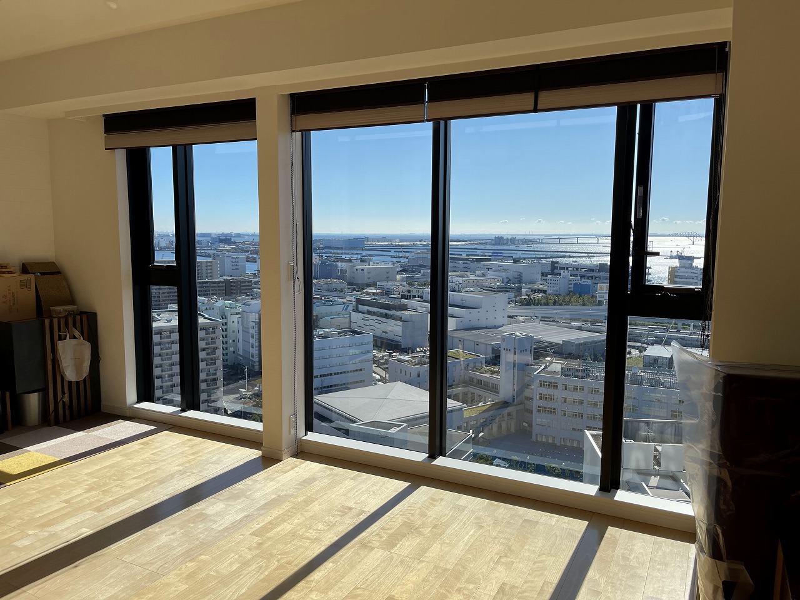
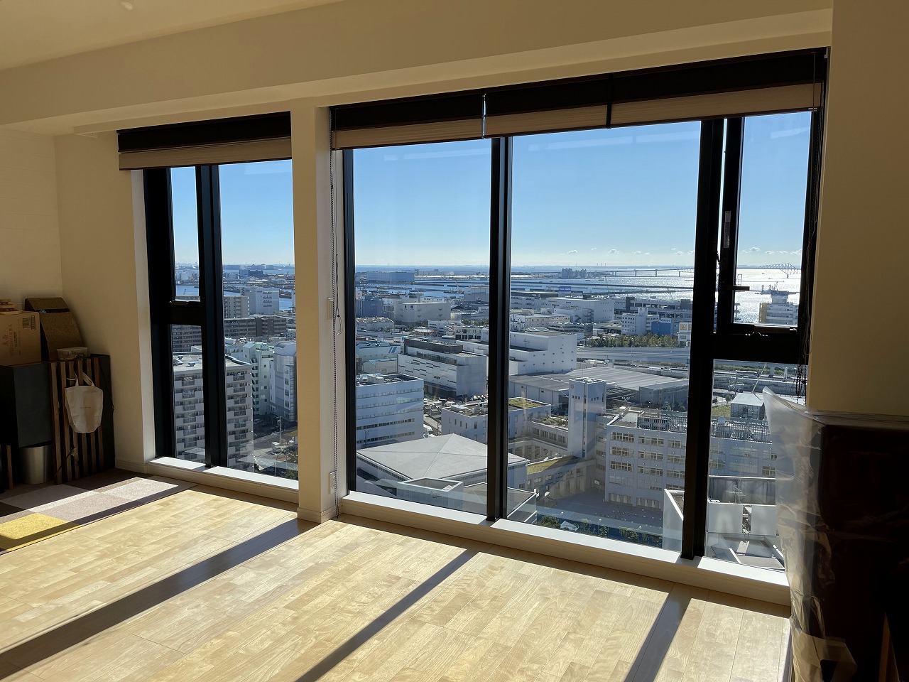
化粧シート施工
建物のリフォームや家財の補修
長年住んでいる家のインテリアを一新したい
穴が開いてしまったドアなど建具を補修したい
紫外線や天候により劣化してしまった玄関扉を低価格で綺麗にしたい
天井の塗装が剥がれてきたので直したい
浴室壁の腐食部分を補修して、低コストでオシャレな浴室に変えたい
劣化してしまった窓枠を新品同様に蘇らせたい
化粧シート施工の特徴
室内・屋外装飾に使用できる耐水・耐久性に優れた粘着剤付きの印刷フィルムです。
防火性能では国土交通省の不燃認定を取得しており、安全性も兼ね備えています。
短期間・低コスト
空間やイメージを変えたい物の印象を、大掛かりな工事なしで劇的に変えることができます。
交換や塗り替えに比べてコストパフォーマンスに優れています。
豊富なデザインバリエーション
リアルな木目を表現したものから、布目、砂目、メタリック、金箔の風合いまで。
数百種類以上のラインナップから、理想の空間演出を選べます。
あらゆる下地に対応
下地を選ばず美しくスピーディーに仕上がります。
大面積や複雑な表面への貼り付けも可能で、建具・家具・扉、さらには愛車のパーツ保護やドレスアップにも使用可能です。

 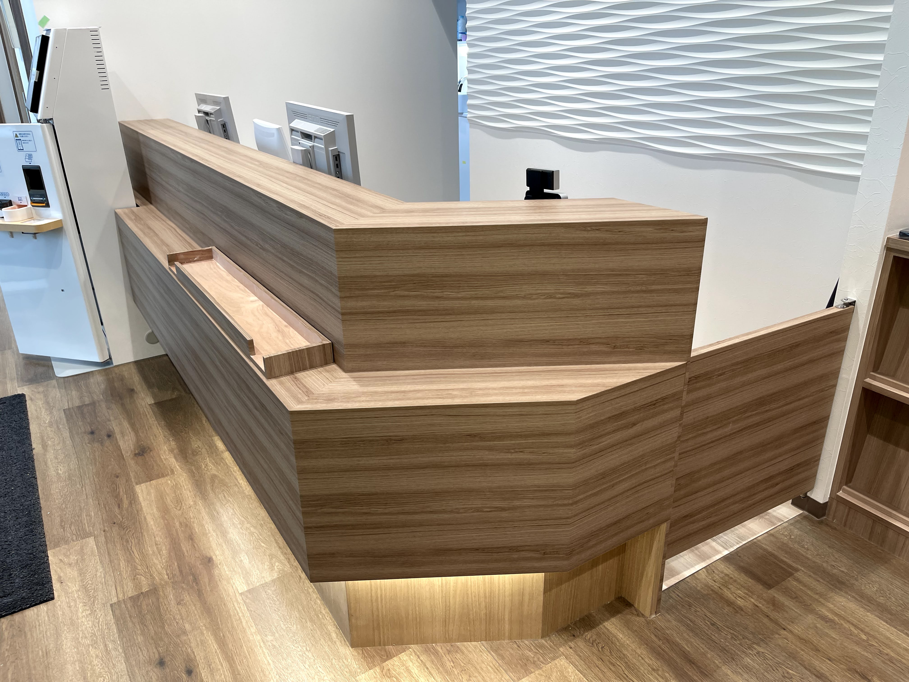
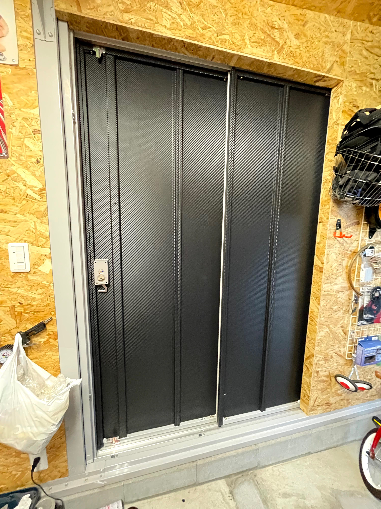
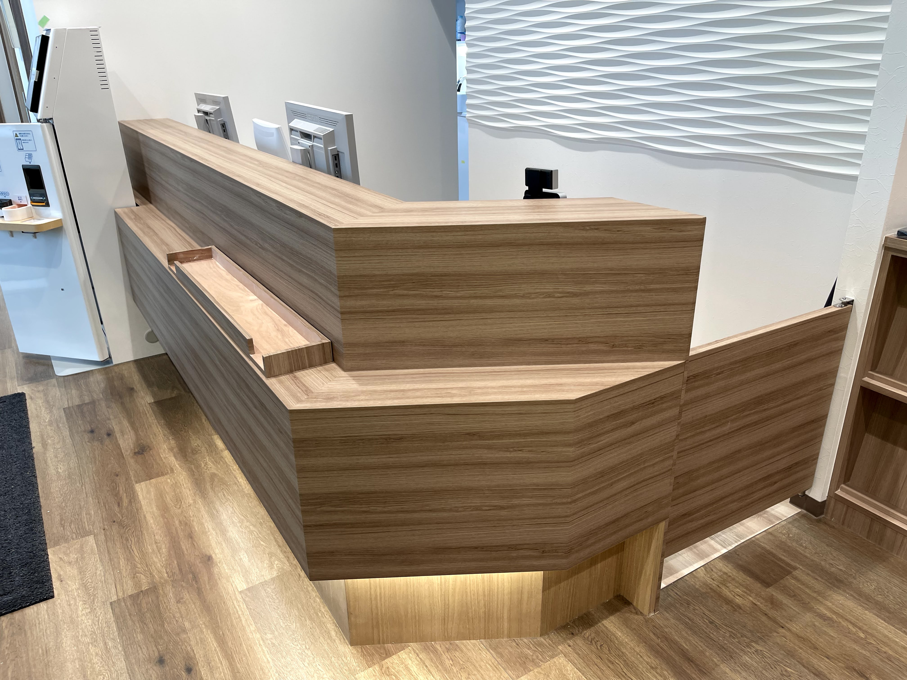
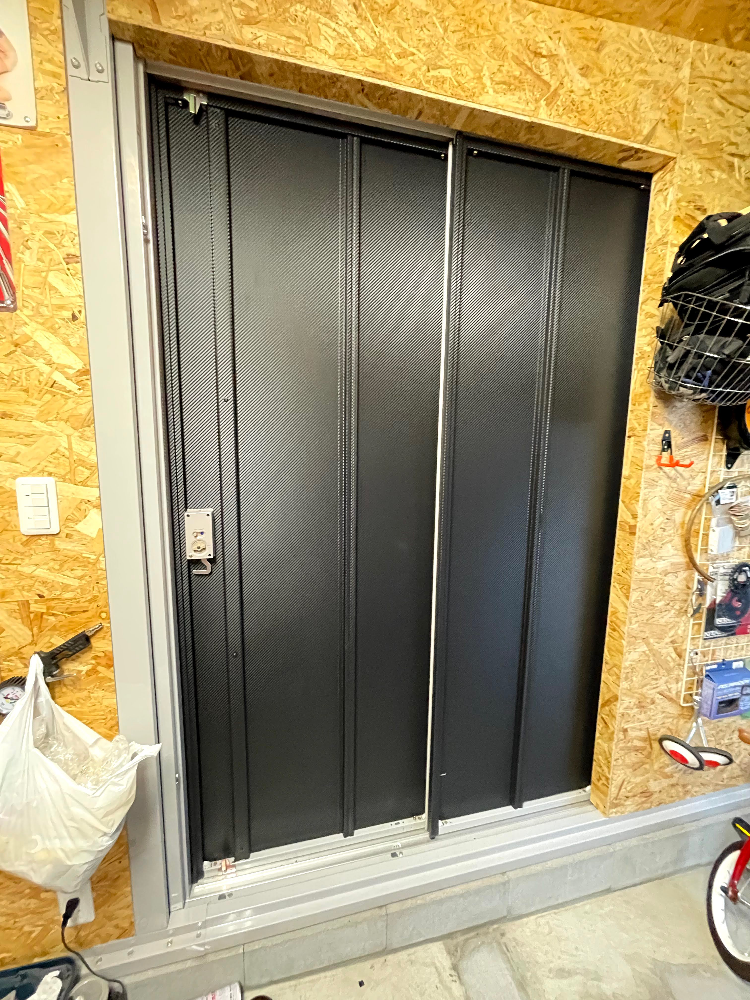
車輌ラッピング
大切な愛車の保護やドレスアップ
ドアミラーやスポイラーだけ色を変えてアクセントにしたい
ボディ全体へのフルラッピングでイメージを一新したい
車体の傷つき防止、腐食対策をしたい
大切な車の塗装面やガラス面を飛び石から守りたい
違う色や柄にしたいけど、売却時や気分で元に戻せるようにしたい
カーラッピング
塗装とは違い、剥がすことで容易に元に戻せるため、愛車の資産価値を下げずにカラーチェンジが楽しめます。
バスや電車の広告、カスタムカーショー、レース車両など幅広い分野で利用されています。
豊富なバリエーション
純正にはない数百種類を超えるカラーから選択可能です。
例として、大手メーカー「3M」では全89色以上のフィルムを展開。
・グロス（艶あり）
・マット（艶消し）
・サテン（半艶）
・メタリック / カーボン など
プロテクションフィルム
車の塗装面やガラス面を物理的に保護するために開発された特殊保護フィルムです。
透明度が高く、貼っていることを感じさせずに愛車を守ります。
主な効果・機能
- 車体の傷つき防止・腐食対策
- 走行中の飛び石などに対する耐チッピング性
- 長期的な使用に耐える耐候性・耐摩耗性
- 車体を錆や傷から強力にガード
 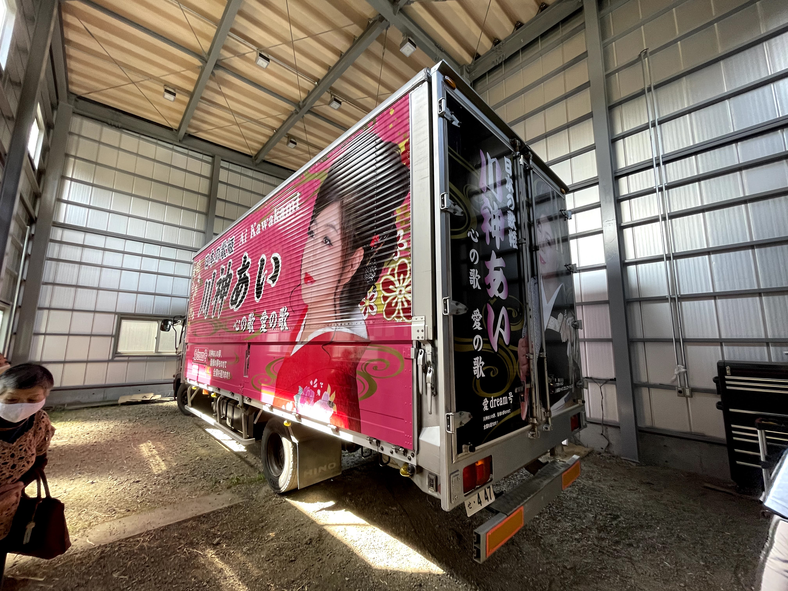
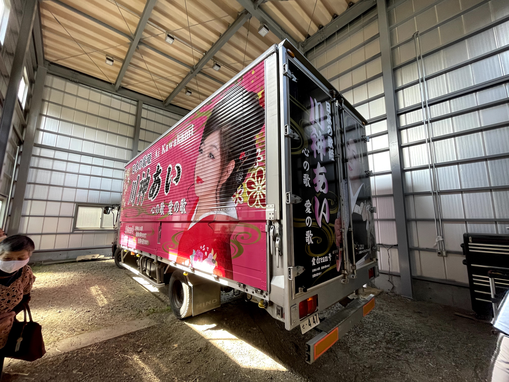

広告・サイン(看板)
店舗やオフィスの「顔」を美しく演出
色褪せて古くなった看板をリニューアルして、お店のイメージを良くしたい
通りに面した窓ガラスを広告スペースとして有効活用したい
社用車に社名やロゴを入れて、街中を走るだけで宣伝できるようにしたい
新規オープンに合わせて、看板のデザインから施工まで一括で頼みたい
夜間でも目立つ電飾看板や、高級感のある切り文字を設置したい
あらゆるサイン製作に対応
小さなステッカー1枚から、大型の壁面看板まで。
カッティングシートによるロゴ作成や、インクジェット出力によるフルカラー印刷など、
お客様の目的に合わせて最適なサインプランをご提案します。
看板製作・リフォーム
古くなった看板の面板交換や、新規看板の設置工事を行います。
電飾看板（内照式）、突き出し看板、壁面パネルなど、設置場所やご予算に合わせて施工いたします。
ウィンドウサイン
窓ガラスは最も手軽で効果的な広告スペースです。
店名やメニューを表示するだけでなく、スリガラス調フィルムと組み合わせることで、店内の目隠しと宣伝を両立できます。
マーキング・切り文字
社用車や営業車に社名ロゴを貼る「マーキング」により、車両を動く広告塔に変身させます。
また、オフィスの入り口や受付に、立体的で高級感のある「切り文字（カルプ文字）」の製作も可能です。


 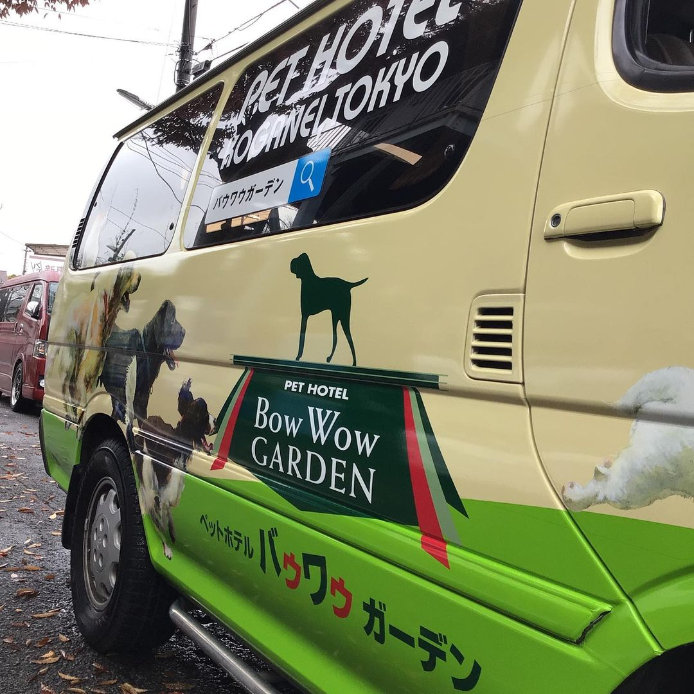
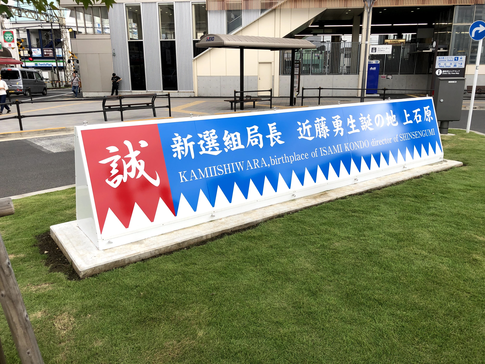
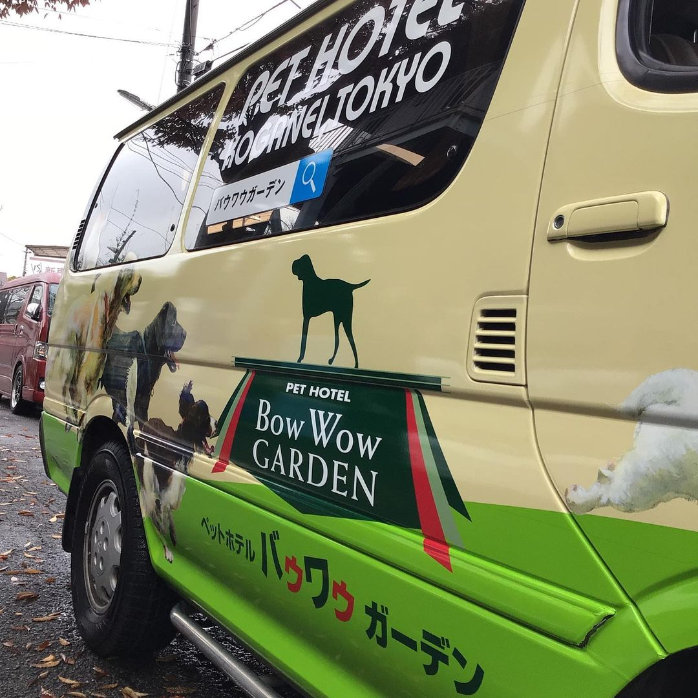
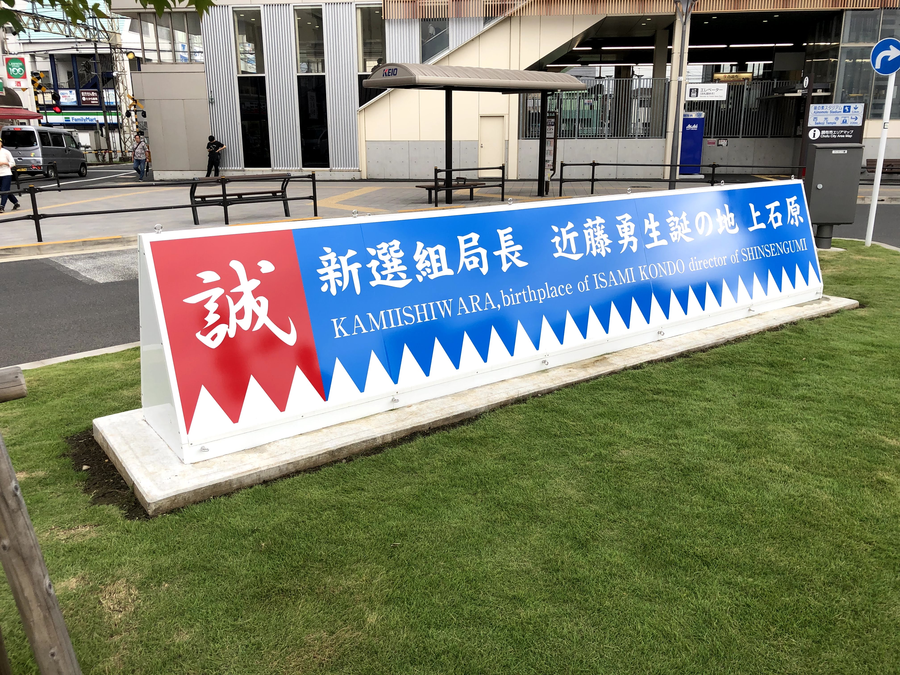
会社概要・アクセス
ご挨拶
この度は、当社のサイトにお越しいただき、誠にありがとうございます。
当社は、ダイノックフィルムを中心に、ガラスフィルム・車両マーキング・サイン製作など、内外装のフィルム工事から、屋内外の広告フィルム工事を主に手がけております。
私たちが持つ技術とサービスで、お客様に喜んでいただければ幸いです。
お住まい・オフィス・店舗などの内装や外装でお悩みの方、サイン・車両マーキングなどでお困りのことがありましたら、お気軽に当社へご相談ください。
事業者登録番号
▼ 地図を見る
FAX. 042-485-9090
定休日：土日祝 (※工事は休まず実施しております)
多摩信金 調布支店
西武信金 柴崎駅前支店
みずほ銀行 調布支店
- 3Mジャパン (ダイノック / ファサラ)
- サンゲツ (リアテック)
- シーアイ化成 (ベルビアン)
- リンテック (ルミクール)
- リンテックサインシステム (パロア)
- 中川ケミカル (ノックス＆タフカル / フォグラス)